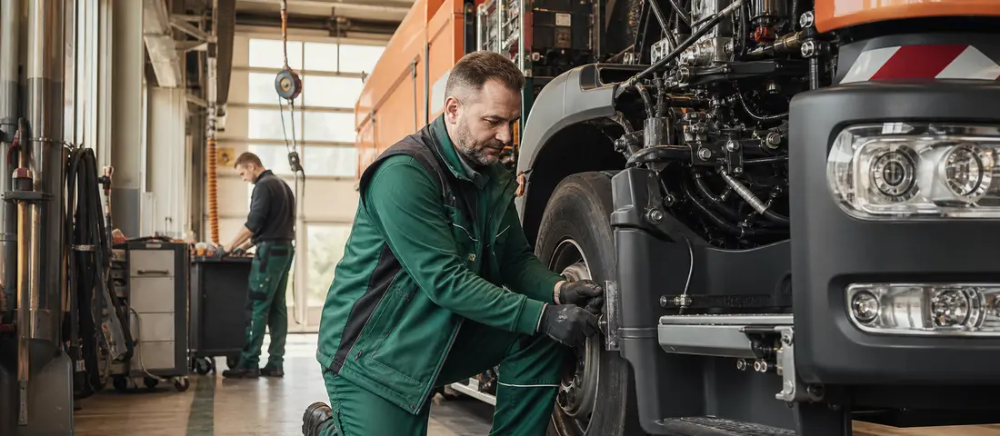

IT & Digitales · Landeshauptstadt Wiesbaden
Fachangestellte/-r für Medien und Informationsdienste (w/m/d)
Wiesbaden · abgeschlossene Berufsausbildung · Frist: 08.10.2026
Originalausschreibung öffnen ↗Offizielle Quellen · Direkte Bewerbung
Aktuelle kommunale und öffentliche Stellenangebote für Wiesbaden kompakt an einem Ort.

Stellenangebote in Wiesbaden
28 passende Angebote
IT & Digitales · Landeshauptstadt Wiesbaden
Wiesbaden · abgeschlossene Berufsausbildung · Frist: 08.10.2026
Originalausschreibung öffnen ↗Verwaltung & Organisation · Landeshauptstadt Wiesbaden
Wiesbaden · abgeschlossenes Studium · Frist: 11.10.2026
Originalausschreibung öffnen ↗Weitere Bereiche · Hessen Mobil
Wiesbaden (Zentrale) Bewerbungsfrist: 18. Oktober 2026 Kennziffer: MR 26/10 Steuerung VIF Wiesbaden_MR_26_10.pdf (PDF/320.79 KB) Öffnet sich in einem neuen Fenster Sachbearbeiterin / Sachbearbeiter (w/m/d) mit den Schwerpunkten Interne Revision ... und Organisationsentwicklung Standort: Wiesbaden (Zentrale) Bewerbungsfrist: 12. Oktober 2026 Kennziffer: S1 24/2 Stellenausschreibung Sachbearbeiterin / Sachbearbeiter (w/m/d) mit den Schwerpunkten Interne Revision und Organisationsentwicklung S1 24/2 (PDF/394.00 KB) Öffnet sich in einem neuen Fenster Bauingenieurin / Bauingenieur (w/m/d) für die Realisierung von Straßenbauprojekten Standort: Darmstadt · Frist: 11. Oktober 2026 · Kennziffer: PB 25/22
Originalausschreibung öffnen ↗Natur & Handwerk · Landeshauptstadt Wiesbaden
Wiesbaden · abgeschlossene Berufsausbildung · Frist: 12.10.2026
Originalausschreibung öffnen ↗Verwaltung & Organisation · Landeshauptstadt Wiesbaden
Wiesbaden · Frist: 13.10.2026
Originalausschreibung öffnen ↗Verwaltung & Organisation · Landeshauptstadt Wiesbaden
Wiesbaden · abgeschlossenes Studium · Frist: 15.10.2026
Originalausschreibung öffnen ↗Verwaltung & Organisation · Landeshauptstadt Wiesbaden
Wiesbaden · abgeschlossenes Studium · Frist: 18.10.2026
Originalausschreibung öffnen ↗Gesundheit & Soziales · Landeshauptstadt Wiesbaden
Wiesbaden · Frist: 18.10.2026
Originalausschreibung öffnen ↗Weitere Bereiche · Landeshauptstadt Wiesbaden
Wiesbaden · abgeschlossene Berufsausbildung · Frist: 18.10.2026
Originalausschreibung öffnen ↗Weitere Bereiche · Landeshauptstadt Wiesbaden
Wiesbaden · abgeschlossenes Studium · Frist: 18.10.2026
Originalausschreibung öffnen ↗Verwaltung & Organisation · Landeshauptstadt Wiesbaden
Wiesbaden · abgeschlossene Berufsausbildung · Frist: 18.10.2026
Originalausschreibung öffnen ↗
Technik & Betrieb · Landeshauptstadt Wiesbaden
Wiesbaden · abgeschlossenes Studium · Frist: 20.10.2026
Originalausschreibung öffnen ↗Kultur & Kommunikation · Landeshauptstadt Wiesbaden
Wiesbaden · abgeschlossenes Studium · Frist: 25.10.2026
Originalausschreibung öffnen ↗Kultur & Kommunikation · Landeshauptstadt Wiesbaden
Wiesbaden · abgeschlossene Berufsausbildung, abgeschlossenes Studium · Frist: 25.10.2026
Originalausschreibung öffnen ↗Verwaltung & Organisation · Landeshauptstadt Wiesbaden
Wiesbaden · Frist: 25.10.2026
Originalausschreibung öffnen ↗Bau & Ingenieurwesen · Landeshauptstadt Wiesbaden
Wiesbaden · abgeschlossenes Studium · Frist: 25.10.2026
Originalausschreibung öffnen ↗Verwaltung & Organisation · Landeshauptstadt Wiesbaden
Wiesbaden · abgeschlossenes Studium · Frist: 28.10.2026
Originalausschreibung öffnen ↗Natur & Handwerk · Landeshauptstadt Wiesbaden
Wiesbaden · abgeschlossene Berufsausbildung · Frist: 31.10.2026
Originalausschreibung öffnen ↗Studium & Einstieg · Landeshauptstadt Wiesbaden
Wiesbaden · abgeschlossene Berufsausbildung · Frist: 01.11.2026
Originalausschreibung öffnen ↗Gesundheit & Soziales · Landeshauptstadt Wiesbaden
Wiesbaden · Frist: 01.11.2026
Originalausschreibung öffnen ↗Studium & Einstieg · Landeshauptstadt Wiesbaden
Wiesbaden · ohne Ausbildung
Originalausschreibung öffnen ↗Gesundheit & Soziales · Landeshauptstadt Wiesbaden
Wiesbaden · abgeschlossene Berufsausbildung
Originalausschreibung öffnen ↗Gesundheit & Soziales · Landeshauptstadt Wiesbaden
Wiesbaden · abgeschlossene Berufsausbildung, abgeschlossenes Studium
Originalausschreibung öffnen ↗Verwaltung & Organisation · Landeshauptstadt Wiesbaden
Wiesbaden · abgeschlossene Berufsausbildung, abgeschlossenes Studium
Originalausschreibung öffnen ↗Verwaltung & Organisation · Landeshauptstadt Wiesbaden
Wiesbaden · abgeschlossene Berufsausbildung, abgeschlossenes Studium
Originalausschreibung öffnen ↗Studium & Einstieg · Landeshauptstadt Wiesbaden
Wiesbaden · ohne Ausbildung
Originalausschreibung öffnen ↗Gesundheit & Soziales · Landeshauptstadt Wiesbaden
Wiesbaden · abgeschlossene Berufsausbildung
Originalausschreibung öffnen ↗Studium & Einstieg · Landeshauptstadt Wiesbaden
Wiesbaden · ohne Ausbildung
Originalausschreibung öffnen ↗Zurzeit sind keine automatisch erfassten Stellen in Wiesbaden verfügbar. Bitte prüfen Sie später erneut die Übersicht.
Hessen Aktuell speichert keine Bewerbungsdaten. Verbindlich sind ausschließlich die Angaben und Fristen in der verlinkten Originalausschreibung.